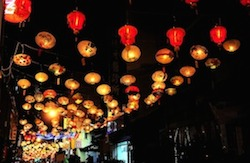

Lunar New Year
Origins
Lunar New Year, also known as Chinese New Year, has been celebrated for over thousands of years but the way its been celebrated before the Qin Dynasty is still unknown. The way Lunar New Year was celebrated was different during each rule but they all still celebrated this day during the Spring Festival.

Activities & Traditions
Lunar New Year is all about celebrating with family and, or friends. You probably know the basic tradition where people give out red envelopes that contain money, and now sometimes scratchers but those red envelopes aren't just for giving out a gift but wishes. People wish their receivers good health, well being, and a long life. They also wish them something else like marriage. Another tradition that not many still do in America are to wear traditional clothing like an Ao Dai or Kimono. This signifies that we honor and value the past or that its a special occasion, but many others just wear it to look nice now. Its just how the person perceives the piece of clothing. Another tradition is to eat moon cake on that day. Mooncakes are a known as a declicacy in Asia because they are eaten during the Mid-Autumn Festival that is for watching the moon and lunar appreciation.
There are many activities that happen during Lunar New Year. Some people gamble their New Years money on a New Years game called Bau cua ca cop. Bau cua ca cop is a Vietnamese gambling game that contains 3 die and a mat with a prawn, fish, crab, calabash or gourd, stag, and rooster. There are 2 ways of playing this game. One way is where everyone places a bet on which picture will be rolled the most, then whatever the result is on the die will determine who gets all the money on the mat and how it will be split between the people. The other way still has everyone place their bets on which picture will be rolled the most, but instead of winners take all, whatever the 3 die says is what you get back. For an example, if 2 roosters and 1 prawn was rolled then the people who bet for the rooster would get doubt of what they betted while the people who bet on the prawn get their money back. Another activity that kind of also counts as a tradition, is lighting fireworks to start off a great year. The most common firework that is lit are firecracks and sparklers. But usually at festivals, its the sky fireworks that are set off during the night. The last activity that isn't usually done at home are the lanterns. During the Lantern Festival, people would write their wishes, hopes, dreams on a piece of paper and tie it to a lantern before letting it go into the sky.

Resources:
http://www.nationsonline.org/oneworld/Chinese_Customs/cny-history.htm
https://en.wikipedia.org/wiki/B%E1%BA%A7u_cua_c%C3%A1_c%E1%BB%8Dp